Cleanup and simpler UI
2026-10-20 · build 261020 · ten cleanup options, all done or prepared. Captures are at 1080×2520 (21:9) in the editor's Game view.
5 → 3menu tabs (Play, Agents, Settings)
28 → 23settings (all on one Settings page)
−350lines of C# (1,619 added, 1,969 removed)
16packages and modules removed
56 / 56tests pass (49 EditMode, 7 PlayMode)
~1.0 GBready to delete: 219 files after one approval
Menu: five tabs became Play, Agents, Settings
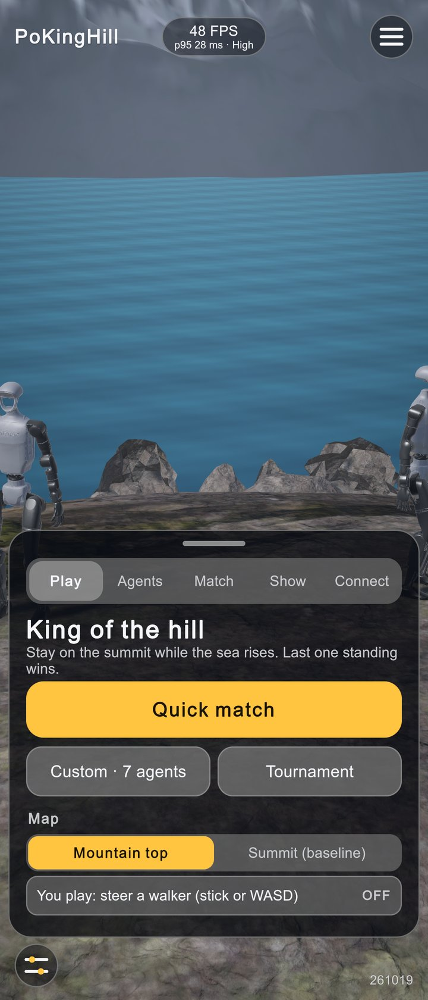
1
2
3
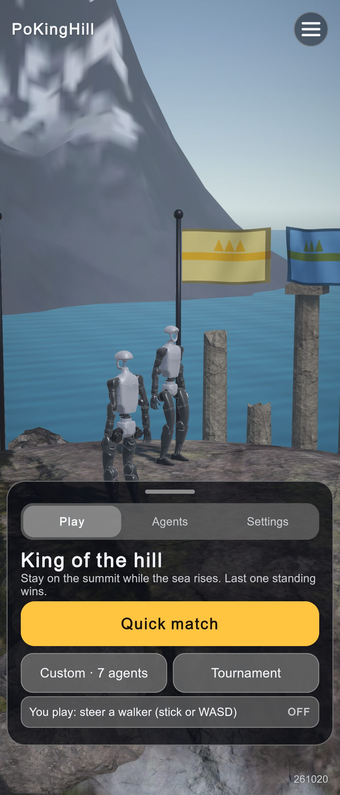
4
- The five tabs (Play, Agents, Match, Show, Connect) are now three. The map picker moved from Play to Settings → Match.
- The FPS pill at top centre is a developer tool now, hidden by default.
- So is the debug button at bottom left. The version stays bottom right.
- Play is just quick match, custom, tournament and "you play".
Settings: one page, four sections
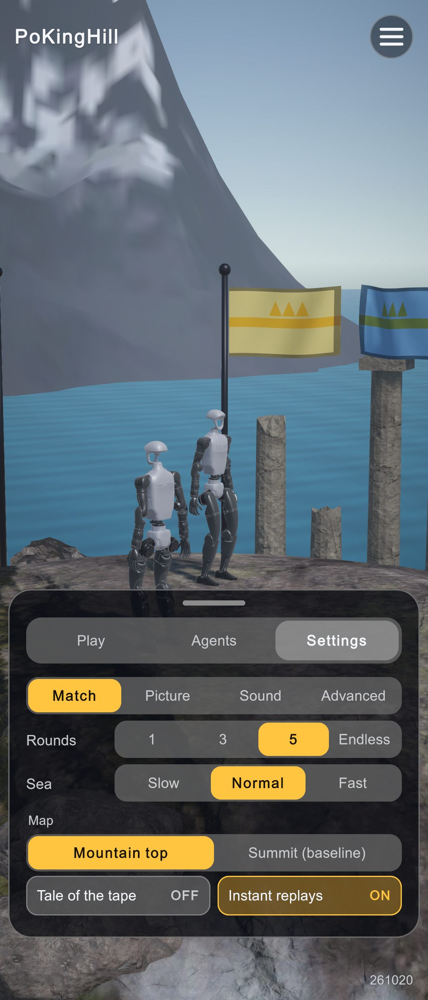
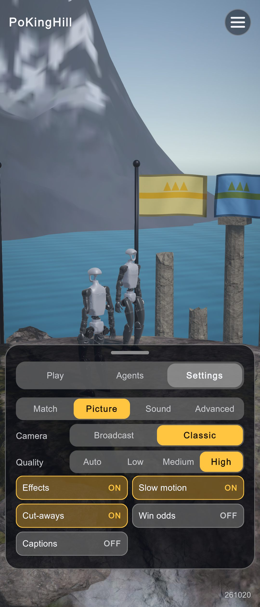
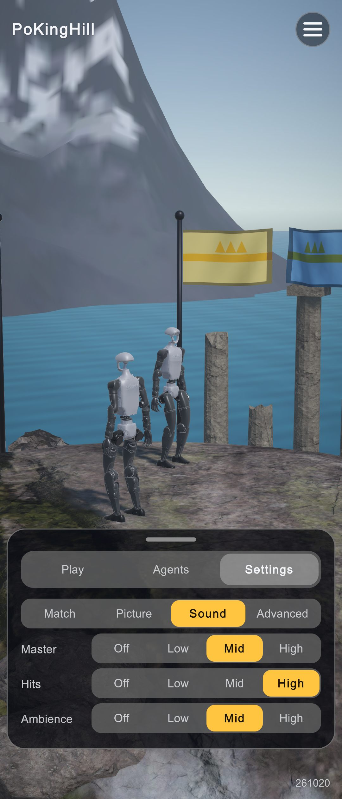
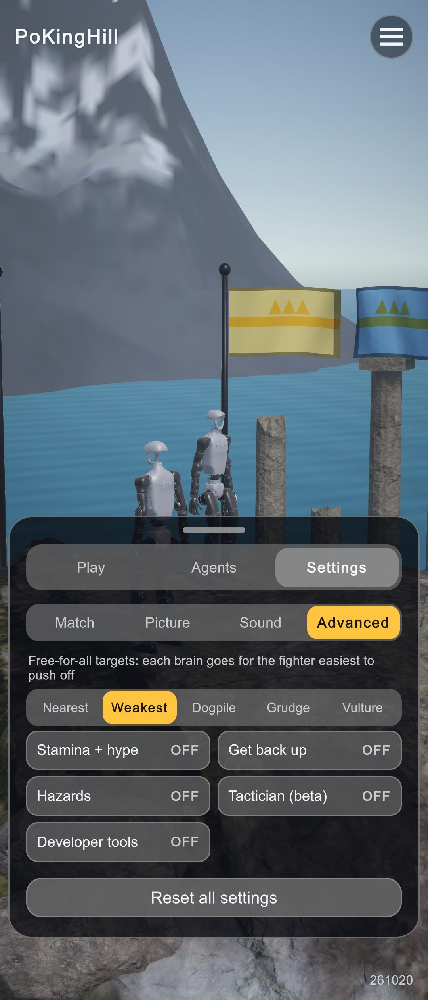
5
- The Developer tools switch brings back the FPS pill (with its cutout dodge), the debug button and the two-finger tap.
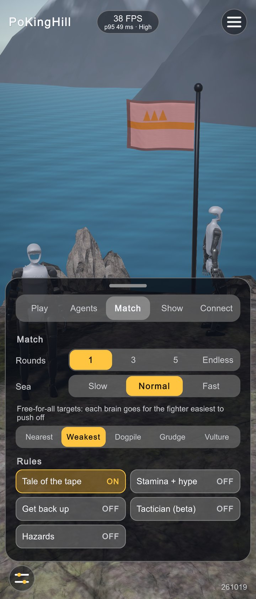
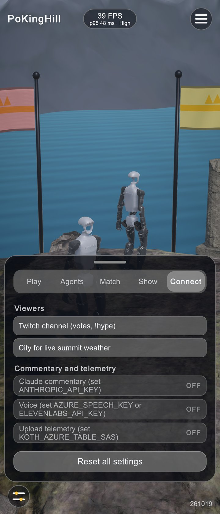
Default settings: the plainest game
| Setting | Was | Now | Why |
|---|---|---|---|
| Tale of the tape (intro) | on | off | Quick match starts the fight at once |
| Instant replays (automatic) | on | off | The results sheet still has the replay strip |
| Win-odds bar | on | off | One less bar under the badges |
| Captions (commentary) | on | off | No caption line over the fight |
| Developer tools (FPS pill, debug button) | always shown | off | New switch under Advanced |
| Effects, slow motion, cut-aways, Broadcast camera | on | on | These are the show, not clutter |
Saved choices are kept: the PlayerPrefs keys didn't change. Only players who never touched a setting see the new defaults.
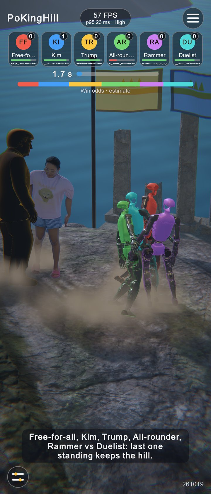
2
3
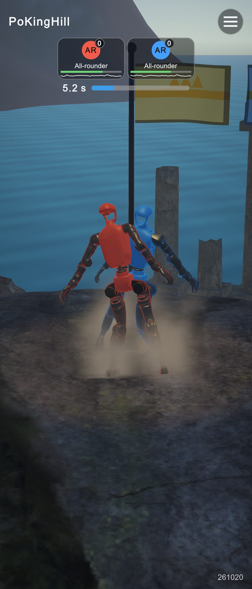

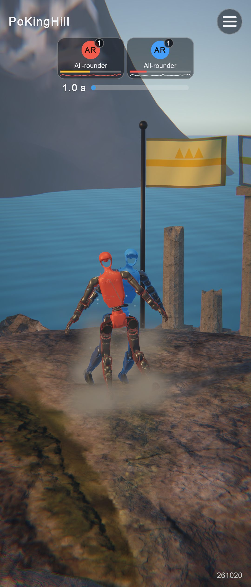
The ten options
| # | Option | Result | |
|---|---|---|---|
| 1 | Prune training runs | prune_runs.py rewritten (dry run by default). It protects league, overnight, audits, the champion, live runs and every path the docs or queue scripts name. 191 files, 1,000 MB of intermediate checkpoints and stale logs are ready. | needs approval |
| 2 | Remove unshipped brains | Gate brains (r0–r3, Kim's kimr1b/kimr1c/kimr3b/kimfight) are kept as parity references. The superseded Kim gates sit behind --old-gates. | your call |
| 3 | Stale imports | A GUID scan showed all 13 MuJoCo import folders are still used. The old hand-kept KEEP list would have broken the Trump testbeds and the game scene. The script now computes usage from GUIDs. | fixed |
| 4 | One-off queue scripts | 11 moved to training/scripts/archive/. The three live queue scripts weren't touched. | done |
| 5 | Duplicate scenes and materials | 9 identical ArenaMaterial_*.mat became FX/Arena.mat; 12 scenes repointed; the importer reuses it. SeaMaterial.mat moved to FX/. Scenes/ now holds only scenes. | done |
| 6 | Settings page, clean defaults | See above. | done |
| 7 | Cut low-value features | Removed: Twitch chat votes, live weather, cloud voice (Azure Speech / ElevenLabs), Claude commentary, Azure telemetry upload. The game has no network calls left. The Tactician and hazards stay under Advanced, because the gates use them. | done |
| 8 | Naming and dedupe | Scripts are grouped into Brain/ Match/ Presentation/ Hud/ Diagnostics/. HudView (975 lines) is split into partial files. Settings renamed: Camera→CameraStyle, Volume→MasterVolume, Telemetry→TelemetryHud. Python: shared ONNX/session helpers in koth/cpu_sim.py, outputs byte-identical. | done |
| 9 | Unused packages | Removed: Timeline, uGUI, the Rider IDE package, and the physics2d, physicscore2d, terrainphysics, umbra, vectorgraphics, adaptiveperformance, assetbundle, director, tetgen, accessibility and three web-request modules. packages-lock lost 145 lines. Compiles clean. | done |
| 10 | Presentation you can tune by hand | The HUD, cameras, effects, lights and sound pool are in Prefabs/Presentation.prefab. BuildDuelDemo instantiates it and wires only the scene references, so hand tuning in the prefab survives rebuilds. The MuJoCo bodies are still imported from MJCF, as the parity rules require. | done |
Runtime check
| Run | Result |
|---|---|
| EditMode tests | 49 / 49 passed |
| PlayMode tests (match flow, every screen on three phones, cutout dodge, 300-tap soak) | 7 / 7 passed |
| Demo_duel, six-way, every option on (hazards, stamina, get-up, Tactician, captions, odds, replays), 6× speed | 6 rounds, all knock-outs; 6 telemetry rows in telemetry/261020.jsonl; 0 errors, 0 exceptions |
| Every scene: null materials, missing scripts | 0 null materials. The 5 git-ignored Gate_* scenes still hold the cut components, but every gate rebuilds its scene before it runs. |
| Bug found on the way | The lightning bolt's useWorldSpace / positionCount / enabled=false sat after a // on the same line in GameSceneBuilder, so they never ran. Fixed. |
Waiting on your go-ahead
Bulk deletion is blocked without your explicit approval, so everything below is staged in tools/cleanup_unused.sh (dry run by default):
| Set | Files | MB |
|---|---|---|
archive/cut-261020 (cut scripts, duplicate materials), Assets/_Recovery, 3 dead Python one-offs | 28 | 4 |
Training runs (prune_runs.py) | 191 | 1,000 |
Optional --old-gates --builds (superseded Kim gate brains, the player build in Builds/) | +226 | +328 |